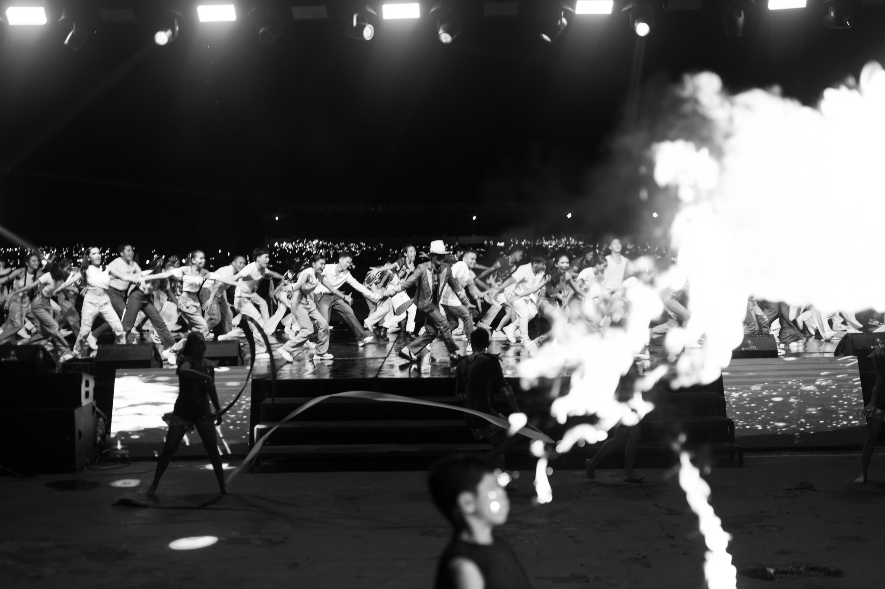

My Gallery on Lux Mundi Cup 2024

The TCGC Cheer Dance is an energetic
performance that combines cheerleading elements with dance
routines, featuring synchronized movements, stunts, and chants.
It showcases the team's spirit and enthusiasm, often performed
at sports events, competitions, and school functions to rally
support and entertain the audience.

The TCGC Mrs. and Ms. TCGC is a
pageant event that celebrates the talents, charisma,
and achievements of participants from the TCGC community,
highlighting their individuality and promoting values
such as confidence, leadership, and community involvement.


The TCGC Street Dance is a dynamic
and energetic dance style performed by the TCGC team,
characterized by urban movements and creative choreography,
often showcasing individuality and teamwork in various
performances and competitions.
.jpg)
The TCGC Battle of the Bands is an exciting
event where different musical groups from the TCGC community
compete by showcasing their musical talents and original
compositions. It features live performances, creating a
vibrant atmosphere that celebrates creativity and camaraderie
among musicians and audiences alike.

The TCGC Pelikulang Lux Mundi is a film
project created by the TCGC community that showcases original
storytelling and artistic expression. It features a variety
of genres and themes, highlighting the creativity and
talent of its filmmakers, while promoting cultural values
and community engagement through the medium of cinema.

TCGC e-sports is a competitive gaming
program that brings together players from the TCGC community
to participate in various video game tournaments. It fosters
teamwork, strategy, and sportsmanship, while providing a
fun and engaging environment for gamers to showcase their
skills and compete for recognition and prizes.


Hip-Hop
A cultural art form that's part of the larger hiphop culture, which also includes graffiti, emceein, and deejaying.
A cultural art form that's part of the larger hiphop culture, which also includes graffiti, emceein, and deejaying.
d.jpg)

TCGC Dance Sports
A competitive ballroom dancing where two contestants on each 6 institutes perform different dances, like the cha-cha or waltz.
A competitive ballroom dancing where two contestants on each 6 institutes perform different dances, like the cha-cha or waltz.

TCGC Opening Salvo
A strong impressive start to an event in TCGC. A celebration performance to excite the students of the TCGC.
A strong impressive start to an event in TCGC. A celebration performance to excite the students of the TCGC.